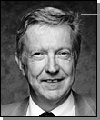

标准建模语言UML综述

Grady Booch
|

Dr.Ivar Jacobson |

Dr.James Rumbaugh
|
面向对象的分析与设计(OOA＆D)方法的发展在80年代末至90年代中出现了一个高潮，UML是这个高潮的产物。它不仅统一了Booch、Rumbaugh和Jacobson的表示方法，而且对其作了进一步的发展，并最终统一为大众所接受的标准建模语言。
1. 标准建模语言UML的出现
公认的面向对象建模语言出现于70年代中期。从1989年到1994年，其数量从不到十种增加到了五十多种。在众多的建模语言中，语言的创造者努力推崇自己的产品，并在实践中不断完善。但是，OO方法的用户并不了解不同建模语言的优缺点及相互之间的差异，因而很难根据应用特点选择合适的建模语言，于是爆发了一场“方法大战”。90年代中，一批新方法出现了，其中最引人注目的是Booch
1993、OOSE和OMT-2等。
Booch是面向对象方法最早的倡导者之一，他提出了面向对象软件工程的概念。1991年，他将以前面向Ada的工作扩展到整个面向对象设计领域。Booch
1993比较适合于系统的设计和构造。
Rumbaugh等人提出了面向对象的建模技术（OMT）方法，采用了面向对象的概念，并引入各种独立于语言的表示符。这种方法用对象模型、动态模型、功能模型和用例模型，共同完成对整个系统的建模，所定义的概念和符号可用于软件开发的分析、设计和实现的全过程，软件开发人员不必在开发过程的不同阶段进行概念和符号的转换。OMT-2特别适用于分析和描述以数据为中心的信息系统。
Jacobson于1994年提出了OOSE方法，其最大特点是面向用例(Use-Case)，并在用例的描述中引入了外部角色的概念。用例的概念是精确描述需求的重要武器，但用例贯穿于整个开发过程，包括对系统的测试和验证。OOSE比较适合支持商业工程和需求分析。
此外，还有Coad/Yourdon方法，即著名的OOA/OOD，它是最早的面向对象的分析和设计方法之一。该方法简单、易学，适合于面向对象技术的初学者使用，但由于该方法在处理能力方面的局限，目前已很少使用。
概括起来，首先，面对众多的建模语言，用户由于没有能力区别不同语言之间的差别，因此很难找到一种比较适合其应用特点的语言；其次，众多的建模语言实际上各有千秋；第三，虽然不同的建模语言大多类同，但仍存在某些细微的差别，极大地妨碍了用户之间的交流。因此在客观上，极有必要在精心比较不同的建模语言优缺点及总结面向对象技术应用实践的基础上，组织联合设计小组，根据应用需求，取其精华，去其糟粕，求同存异，统一建模语言。
1994年10月，Grady Booch和Jim Rumbaugh开始致力于这一工作。他们首先将Booch
93和OMT-2 统一起来，并于1995年10月发布了第一个公开版本，称之为统一方法UM
0.8（Unitied Method）。1995年秋，OOSE 的创始人Ivar Jacobson加盟到这一工作。经过Booch、Rumbaugh和Jacobson三人的共同努力，于1996年6月和10月分别发布了两个新的版本，即UML
0.9和UML 0.91，并将UM重新命名为UML（Unified Modeling Language）。
1996年，一些机构将UML作为其商业策略已日趋明显。UML的开发者得到了来自公众的正面反应，并倡议成立了UML成员协会，以完善、加强和促进UML的定义工作。当时的成员有DEC、HP、I－Logix、
Itellicorp、 IBM、ICON Computing、MCI Systemhouse、Microsoft、Oracle、Rational
Software、TI以及Unisys。这一机构对UML 1.0（1997年1月）及UML 1.1（1997年11月17日）的定义和发布起了重要的促进作用。
UML是一种定义良好、易于表达、功能强大且普遍适用的建模语言。它溶入了软件工程领域的新思想、新方法和新技术。它的作用域不限于支持面向对象的分析与设计，还支持从需求分析开始的软件开发的全过程。
面向对象技术和UML的发展过程可用上图来表示，标准建模语言的出现是其重要成果。在美国，截止1996年10月，UML获得了工业界、科技界和应用界的广泛支持，已有700多个公司表示支持采用UML作为建模语言。1996年底，UML已稳占面向对象技术市场的85％，成为可视化建模语言事实上的工业标准。1997年11月17日，OMG采纳UML
1.1作为基于面向对象技术的标准建模语言。UML代表了面向对象方法的软件开发技术的发展方向，具有巨大的市场前景，也具有重大的经济价值和国防价值。
2. 标准建模语言UML的内容
首先，UML融合了Booch、OMT和OOSE方法中的基本概念，而且这些基本概念与其他面向对象技术中的基本概念大多相同，因而，UML必然成为这些方法以及其他方法的使用者乐于采用的一种简单一致的建模语言；其次，UML不仅仅是上述方法的简单汇合，而是在这些方法的基础上广泛征求意见，集众家之长，几经修改而完成的，UML扩展了现有方法的应用范围；第三，UML是标准的建模语言，而不是标准的开发过程。尽管UML的应用必然以系统的开发过程为背景，但由于不同的组织和不同的应用领域，需要采取不同的开发过程。
作为一种建模语言，UML的定义包括UML语义和UML表示法两个部分。
(1) UML语义 描述基于UML的精确元模型定义。元模型为UML的所有元素在语法和语义上提供了简单、一致、通用的定义性说明，使开发者能在语义上取得一致，消除了因人而异的最佳表达方法所造成的影响。此外UML还支持对元模型的扩展定义。
(2) UML表示法 定义UML符号的表示法，为开发者或开发工具使用这些图形符号和文本语法为系统建模提供了标准。这些图形符号和文字所表达的是应用级的模型，在语义上它是UML元模型的实例。
标准建模语言UML的重要内容可以由下列五类图（共9种图形）来定义：
第一类是用例图，从用户角度描述系统功能，并指出各功能的操作者。
第二类是静态图 (Static diagram)，包括类图、对象图和包图。其中类图描述系统中类的静态结构。不仅定义系统中的类，表示类之间的联系如关联、依赖、聚合等，也包括类的内部结构（类的属性和操作）。类图描述的是一种静态关系，在系统的整个生命周期都是有效的。
对象图是类图的实例，几乎使用与类图完全相同的标识。他们的不同点在于对象图显示类的多个对象实例，而不是实际的类。一个对象图是类图的一个实例。由于对象存在生命周期，因此对象图只能在系统某一时间段存在。
包由包或类组成，表示包与包之间的关系。包图用于描述系统的分层结构。
第三类是行为图（Behavior diagram），描述系统的动态模型和组成对象间的交互关系。其中状态图描述类的对象所有可能的状态以及事件发生时状态的转移条件。通常，状态图是对类图的补充。在实用上并不需要为所有的类画状态图，仅为那些有多个状态其行为受外界环境的影响并且发生改变的类画状态图。
而活动图描述满足用例要求所要进行的活动以及活动间的约束关系，有利于识别并行活动。
第四类是交互图（Interactive diagram），描述对象间的交互关系。其中顺序图显示对象之间的动态合作关系，它强调对象之间消息发送的顺序，同时显示对象之间的交互；合作图描述对象间的协作关系，合作图跟顺序图相似，显示对象间的动态合作关系。除显示信息交换外，合作图还显示对象以及它们之间的关系。如果强调时间和顺序，则使用顺序图；如果强调上下级关系，则选择合作图。这两种图合称为交互图。
第五类是实现图 ( Implementation diagram )。其中构件图描述代码部件的物理结构及各部件之间的依赖关系。一个部件可能是一个资源代码部件、一个二进制部件或一个可执行部件。它包含逻辑类或实现类的有关信息。部件图有助于分析和理解部件之间的相互影响程度。
配置图定义系统中软硬件的物理体系结构。它可以显示实际的计算机和设备（用节点表示）以及它们之间的连接关系，也可显示连接的类型及部件之间的依赖性。在节点内部，放置可执行部件和对象以显示节点跟可执行软件单元的对应关系。
从应用的角度看，当采用面向对象技术设计系统时，首先是描述需求；其次根据需求建立系统的静态模型，以构造系统的结构；第三步是描述系统的行为。其中在第一步与第二步中所建立的模型都是静态的，包括用例图、类图（包含包）、对象图、组件图和配置图等五个图形，是标准建模语言UML的静态建模机制。其中第三步中所建立的模型或者可以执行，或者表示执行时的时序状态或交互关系。它包括状态图、活动图、顺序图和合作图等四个图形，是标准建模语言UML的动态建模机制。因此，标准建模语言UML的主要内容也可以归纳为静态建模机制和动态建模机制两大类。
3. 标准建模语言UML的主要特点
标准建模语言UML的主要特点可以归结为三点：
（1） UML统一了Booch、OMT和OOSE等方法中的基本概念。
（2） UML还吸取了面向对象技术领域中其他流派的长处，其中也包括非OO方法的影响。UML符号表示考虑了各种方法的图形表示，删掉了大量易引起混乱的、多余的和极少使用的符号，也添加了一些新符号。因此，在UML中汇入了面向对象领域中很多人的思想。这些思想并不是UML的开发者们发明的，而是开发者们依据最优秀的OO方法和丰富的计算机科学实践经验综合提炼而成的。
（3）UML在演变过程中还提出了一些新的概念。在UML标准中新加了模板(Stereotypes)、职责(Responsibilities)、扩展机制(Extensibility
mechanisms)、线程(Threads)、过程(Processes)、分布式(Distribution)、并发(Concurrency)、模式(Patterns)、合作(Collaborations)、活动图（Activity
diagram）等新概念，并清晰地区分类型(Type)、类(Class)和实例(Instance)、细化(Refinement)、接口(Interfaces)和组件(Components)等概念。
因此可以认为，UML是一种先进实用的标准建模语言，但其中某些概念尚待实践来验证，UML也必然存在一个进化过程(未完待续)。
4. 标准建模语言UML的应用领域
UML的目标是以面向对象图的方式来描述任何类型的系统，具有很宽的应用领域。其中最常用的是建立软件系统的模型，但它同样可以用于描述非软件领域的系统，如机械系统、企业机构或业务过程，以及处理复杂数据的信息系统、具有实时要求的工业系统或工业过程等。总之，UML是一个通用的标准建模语言，可以对任何具有静态结构和动态行为的系统进行建模。
此外，UML适用于系统开发过程中从需求规格描述到系统完成后测试的不同阶段。在需求分析阶段，可以用用例来捕获用户需求。通过用例建模，描述对系统感兴趣的外部角色及其对系统（用例）的功能要求。分析阶段主要关心问题域中的主要概念（如抽象、类和对象等）和机制，需要识别这些类以及它们相互间的关系，并用UML类图来描述。为实现用例，类之间需要协作，这可以用UML动态模型来描述。在分析阶段，只对问题域的对象（现实世界的概念）建模，而不考虑定义软件系统中技术细节的类（如处理用户接口、数据库、通讯和并行性等问题的类）。这些技术细节将在设计阶段引入，因此设计阶段为构造阶段提供更详细的规格说明。
编程（构造）是一个独立的阶段，其任务是用面向对象编程语言将来自设计阶段的类转换成实际的代码。在用UML建立分析和设计模型时，应尽量避免考虑把模型转换成某种特定的编程语言。因为在早期阶段，模型仅仅是理解和分析系统结构的工具，过早考虑编码问题十分不利于建立简单正确的模型。
UML模型还可作为测试阶段的依据。系统通常需要经过单元测试、集成测试、系统测试和验收测试。不同的测试小组使用不同的UML图作为测试依据：单元测试使用类图和类规格说明；集成测试使用部件图和合作图；系统测试使用用例图来验证系统的行为；验收测试由用户进行，以验证系统测试的结果是否满足在分析阶段确定的需求。
总之，标准建模语言UML适用于以面向对象技术来描述任何类型的系统，而且适用于系统开发的不同阶段，从需求规格描述直至系统完成后的测试和维护。
[返回] |